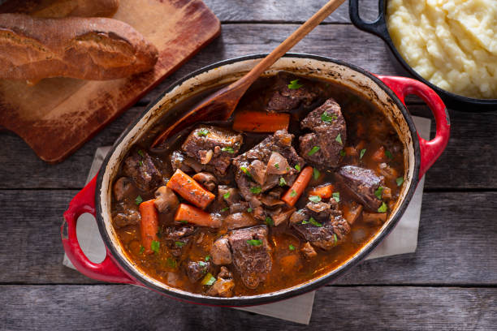

Lasagna

Description
Beef Bourguignon is a classic French dish featuring tender beef braised in a rich red wine sauce with aromatic vegetables like carrots, onions, and mushrooms. The long, slow cooking process transforms the tough beef into melt-in-your-mouth perfection. Traditionally made with Burgundy wine, this dish is a celebration of French cuisine, offering a hearty and satisfying meal perfect for colder months.
Ingredients
- Beef chuck or round, cubed
- Bacon
- Onion, carrot, celery
- Garlic
- Flour
- Red wine
- Beef broth
- Dried thyme, bay leaf
- Button mushrooms
- Pearl onions
- Butter
- Salt and pepper
Steps
- Brown beef cubes in hot oil.
- Render bacon fat in the same pot, cook onions, carrots, and celery.
- Add flour to beef and brown lightly.
- Deglaze the pan with red wine, add beef broth, thyme, and bay leaf.
- Transfer to a Dutch oven, cover, and braise in a low oven for several hours.
- Sauté mushrooms and pearl onions.
- Thicken the sauce if needed.
- Season with salt and pepper.
- Serve with buttery mashed potatoes or crusty bread.